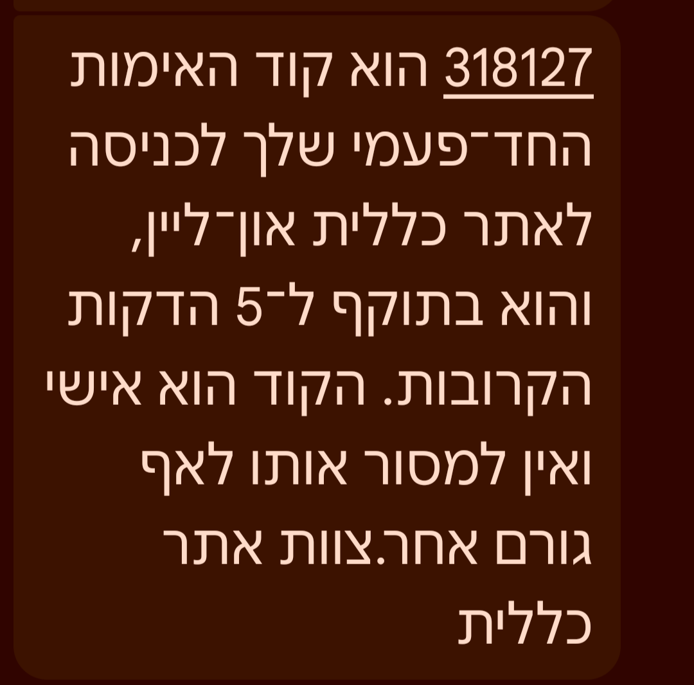

Memory, Identity, and Continuity
אנחנו מלמדים אייג'נטים לדבר כמו בני אדם, להביע אמפתיה, ואפילו לייצר תחושת אישיות — אבל ברגע שהקונטקסט נגמר, הרבה מהם פשוט שוכחים.
מה בנינו כבר — ומה עדיין חסר
חם, אמפתי, מגיב בסגנון המתאים לשיחה
שם, אישיות, ערכים, סגנון תקשורת ייחודי
"אני מבין את התסכול שלך 🤝" — נשמע כמו בן אדם
פרסונה ✅ · ביוגרפיה ❌
פרסונה מרשימה · tone of voice · אמפתיה מדומה · אינטראקציה אנושית
Agent שנשמע כאילו הוא מכיר אותך.
Memory אמיתי · ביוגרפיה · רצף בין סשנים · ידע מוסדי שצומח לאורך זמן
Agent שבאמת זוכר אותך.
זוכר קוד SMS לדקה — ומיד שוכח.

אבל יכול להיזכר תוך שניות בשיחה שהייתה לפני שלושה שבועות, כולל הקשר רגשי וציר זמן.
זיכרון = מה חשוב, לא רק מה קרה לאחרונה.
מחזיקים state זמני בתוך Context Window.
ברגע שהחלון מתמלא, מידע חדש דוחק החוצה מידע ישן.
אין סלקציה, אין עדיפויות, אין משמעות לאורך זמן.
💡 האנלוגיה: Context Window הוא שולחן עבודה זמני. Memory היא הספרייה, הארכיון, והיכולת לדעת מה לשלוף ומתי.
זיכרון = קידוד, אחסון, שליפה — שמשנה התנהגות עתידית.
קידוד ועיבוד מידע נכנס
אחסון מידע לאורך זמן
שליפה בזמן ובהקשר הנכון
הזיכרון לא שלם עד שהוא משנה פעולה
זיכרון של אירועים ספציפיים עם ציר זמן ומקום
"ב-meeting של שלישי דיברנו על X" ·
"הפעם האחרונה שניסינו גישה זו, נכשלנו כי..."
זיכרון של עובדות ומשמעויות ללא קשר לאירוע
"המשתמש מעדיף תשובות קצרות" · "הפרויקט עובד עם Python 3.11+"
הסשן הנוכחי — מה שקורה עכשיו
Messages · state · metadata · context פעיל
מה שנשמר לאורך זמן — חוצה סשנים
preferences · facts · institutional knowledge · history
💡 מדעי המוח: אמנזיה = אי-יכולת לקודד חדש, לא לשלוף ישן. רוב האייג'נטים? אמנסיקים — חיים רק מה-pre-training.
קיר עם פתקים · תמונות · חוטים אדומים
זיכרון טוב = לא רק אחסון, אלא ארגון קשרים בין ישויות, אירועים והקשרים.
הזרקת זיכרון — notes, CLAUDE.md
ידע פרוצדורלי — SKILL.md לקריאה
תפקיד, סגנון תקשורת, העדפות
חיפוש היסטוריה — Episodic memory
Markdown ו-notes הם התחלה. אבל לאייג'נט שצריך "לטייל" על ידע, למצוא קשרים ולהסיק — צריך מבנה richer.
מי קשור למי
ישויות, יחסים, קשרים בין קונספטים
מה דומה למה
Semantic similarity, retrieval רלוונטי
מאיפה זה הגיע
Provenance, מקור, עקיבות אחרי מידע
בני אדם שוכחים מסיבה טובה — עומס קוגניטיבי, רעש, ותעדוף של מה שחשוב. גם אייג'נטים צריכים forgetting policies.
User preferences · תוצאות משמעותיות · ידע שמשפיע על החלטות עתידיות
שיחות ארוכות → summary קומפקטי · session logs → abstracts
מידע session-only · רגולציה (GDPR) · רעש ופרטים לא רלוונטיים
task progress · PR numbers · מצב זמני שלא צריך להמשיך
מה שצריך להיות זמין לכל agents באותה סביבה — shared context
כמה agents שמשתפים אותו memory space — coordination
Redis לא משמש פה רק כ-cache — הוא שרת זיכרון שמנהל מדיניות, רציפות, שיתוף ושכחה.
Request / שיחה
Working memory · messages · state
Structuring graph + vectors
Working + Long-term · policy · shared
Semantic search · filter · summarize
✦ Semantic search across sessions
✦ Filtering by user · entity · time
✦ Summarization & promotion
✦ Multiple memory strategies
✦ Shared context between agents
✦ Forgetting / expiry policies
לא רק "שמור הכל" — אלא הגדרה מפורשת של מה נשמר, כמה זמן, ואיפה.
Agents עם אישיות ו-tone of voice
Context window הוא שולחן עבודה, לא ספרייה
Markdown → Cognee → Knowledge graph
Production memory + policy + shared context
Agents שזוכרים, מתעדפים — ויודעים לשכוח
✦ "בנינו להם פרסונה, לא ביוגרפיה." · ✦ "Context window הוא שולחן עבודה." · ✦ "Memory בפרודקשן היא policy."
אם פעם בנינו agents שיודעים לענות —
היום אנחנו בונים agents שיודעים לזכור.
השלב הבא: agents שיודעים גם מה לא לזכור.